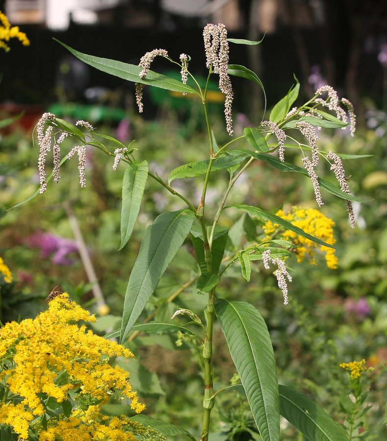

पेल पर्सिकेरियाPale Persicaria
Persicaria lapathifolia · Polygonaceae · FLR-0388

- Scientific name वैज्ञानिक नाम
- Persicaria lapathifolia (L.) Delarbre, 1800
- Family कुल
- Polygonaceae
- Hindi हिंदी
- पेल पर्सिकेरिया
- Local names स्थानीय नाम
- pale persicaria
- Status here यहाँ की स्थिति
- native
- Movement आवागमन
- Resident, here all year
- Known from कहाँ दर्ज
- Others have published records from the wider Awadh–Purvanchal plain, none yet from Basti–Ayodhya अवध–पूर्वांचल से दूसरों के प्रकाशित अभिलेख, बस्ती–अयोध्या से अभी नहीं
- IUCN IUCN
- LC
- Review समीक्षा
- not yet reviewed
When to look कब देखें
Present all year. साल भर मौजूद।
Tell it apart from इनसे अलग पहचानें
पेल पर्सिकेरिया / Pale Persicaria
Persicaria lapathifolia (L.) Delarbre, 1800 — Polygonaceae
पेल पर्सिकेरिया — नदियों के रेतीले कछारों, पोखरों के किनारों और दलदली खेतों में उगने वाला एक मजबूत वार्षिक पौधा है। इसके तने पर गांठे फूली हुई होती हैं और पत्तों पर अक्सर बीच में एक गहरा काला या भूरा धब्बा दिखाई देता है। इसकी शाखाओं के सिरों पर घनी, हल्की झुकी हुई बालियां निकलती हैं जिन पर छोटे सफेद, हरे या हल्के गुलाबी फूल गुच्छों में खिलते हैं। इसके बीज बत्तखों और जलपक्षियों का प्रिय भोजन हैं।
Quick Identification त्वरित पहचान
| Feature | Description |
|---|---|
| Habit | Robust, erect or decumbent annual wetland herb with swollen stem nodes |
| Leaf blade | Lanceolate to elliptic-lanceolate; often marked with a dark central chevron |
| Ochrea | Cylindrical membranous stipular sheath; ribbed, truncate, eciliate or nearly so |
| Inflorescence | Dense, cylindrical spike-like racemes, typically arching or nodding at maturity |
| Flower color | Greenish-white to pale pink; perianth veins distinct and anchor-branched |
| Achene | Broadly ovate, flattened, disc-shaped nutlet with concave faces; shiny brown-black |
Field tip: Look along drying river shallows and wetland edges. Check the nodding flower spikes: the individual pale flowers show distinctive anchor-forked outer veins, and the cylindrical ochrea sheaths surrounding the nodes lack long bristle-like fringes.
हिंदी:
इसके तने की गांठों पर झिल्ली जैसी आवरण नलिका होती है जिसके किनारे पर कोई लंबे बाल नहीं होते।
फूलों की बालियां घनी और सिरे पर हल्की झुकी हुई होती हैं।
पत्तियों के बीच में अक्सर अंग्रेजी के अक्षर वी (V) जैसा गहरा निशान बना होता है।
Morphology आकारिकी
Measurement not available in consulted sources.
Persicaria lapathifolia is a vigorous, branched annual herb with stout, terete stems that are erect or prostrate and rooting at the lower nodes (Hooker 1890). The nodes are visibly swollen, especially in wet soils. Leaves are subsessile or shortly petioled, elliptic-ovate to lanceolate, acuminate at the apex and cuneate at the base; the blades are punctate-glandular beneath and sparingly ciliolate along the margins (Hooker 1890).
The stipules form a cylindrical tubular ochrea closely sheathing the stem internodes above each node; the ochrea is membranous, ribbed with fine longitudinal veins, truncate at the mouth, and completely eciliate or bearing only minute, sparse ciliolae (Hooker 1890). Inflorescences consist of dense, cylindrical, spike-like racemes carried on glandular-scabrid peduncles that nod or arch gracefully. The perianth is four- or five-partite, greenish-white or pale pink, with prominent outer tepal veins that fork into recurved, anchor-shaped branches at the tips. The fruit is a flat, biconvex or concave disc-like achene with rounded margins and a lustrous dark brownish-black surface.
हिंदी:
इसके तने मोटे और गांठदार होते हैं जो नीचे की ओर जमीन पर फैलकर जड़ें पकड़ते हैं।
पत्तियां लंबी और नुकीली होती हैं जिनके नीचे सूक्ष्म ग्रंथियां पाई जाती हैं।
इसके फल छोटे, चपटे और चमकदार काले रंग के दाने जैसे होते हैं।
Behaviour & Ecology व्यवहार और पारिस्थितिकी
A fast-growing pioneer colonizer of exposed alluvial sediments and fluctuating waterlines. It establishes readily on nutrient-rich silt, drying mudbanks of rivers, and edges of seasonal flood pools left by retreating monsoonal inundations.
The plant tolerates temporary submergence of its lower stems while directing foliage and flowering spikes into open air and full sunlight. Dense mono-specific stands trap river sediments, bind unconsolidated mud with extensive fibrous root systems, and mitigate shoreline erosion during sudden high-flow events.
हिंदी:
यह बाढ़ का पानी उतरने के बाद नदी के किनारों की ताजी मिट्टी पर सबसे पहले उगने वाले पौधों में से है।
इसकी जड़ें कीचड़ को मजबूती से पकड़कर कटाव को रोकती हैं।
यह पूरी धूप में तेजी से बढ़ता है और बड़ी संख्या में बीज पैदा करता है।
Life Cycle / Phenology जीवन चक्र
Adapted to the annual flooding and drying cycle of northern Indian river basins. Seeds lying dormant in riverside mud germinate profusely following monsoon flood peaks as water levels drop and expose bare silt.
Vegetative branching progresses rapidly through the late monsoon and post-monsoon months. Flowering begins during autumn and continues throughout the cool winter season (Hooker 1890). Abundant shiny black achenes mature continuously from December through spring. As the summer drought sets in and marshes dry out completely, the parent plants senesce and collapse, depositing vast numbers of seeds that survive both summer heat and monsoon immersion.
हिंदी:
बरसात के बाद जब पानी घटने लगता है, तब इसके बीज अंकुरित होते हैं।
सर्दियों के महीनों में इसमें लगातार फूल आते हैं और दानेदार बीज पकते रहते हैं।
गर्मी में पौधा सूख जाता है और इसके बीज मिट्टी में पड़े रहकर अगली बाढ़ का इंतजार करते हैं।
Associated Species / Interactions सहजीवी प्रजातियाँ
Forms a dominant element of the riparian emergent community across the Gangetic plain:
- Grows in mixed wetland stands with Denseflower Knotweed and Brahmi
- Attracts diverse pollinators including syrphid flies, small solitary bees, and pierid butterflies
- Achenes are consumed avidly by wintering waterfowl, including teal, pintails, and geese
- Foliage provides protective cover and foraging grounds for marsh birds and amphibians
हिंदी:
यह नदी किनारे Denseflower Knotweed के साथ मिलकर दलदली झाड़ी बनाता है।
प्रवासी बत्तखें और जलमुर्गियां इसके पके हुए दानों को बड़े चाव से खाती हैं।
Pests and Diseases कीट और रोग
A vigorous wild plant that hosts a variety of generalist wetland insects. Leaf-beetles of the genus Galerucella and various flea beetles chew small shot-holes through the foliage. Polyphagous aphids occasionally colonise the young flower spikes during cool winter periods.
Foliage is susceptible to leaf spot caused by Cercospora microfungi and occasional rust infections during prolonged humid weather, but these rarely cause extensive mortality. In agricultural lowlands, it can behave as an aggressive competitive weed in winter rabi crops planted in poorly drained, waterlogged fields.
हिंदी:
पत्तियों पर कभी-कभी फफूंद के काले-भूरे धब्बे या कीड़ों के छेद दिखाई देते हैं।
जलभराव वाले खेतों में यदि यह अधिक उग आए तो फसलों की निराई करनी पड़ती है।
Agricultural / Human Relevance कृषि प्रासंगिकता
In rural riverine tracts, dense stands are valued for protecting sandy banks and canal shoulders from slumping.
हिंदी:
यह नदी के किनारों को कटने से बचाता है।
Expected Locally स्थानीय रूप से अपेक्षित
Not a field record. Written from published accounts for eastern Uttar Pradesh. No confirmed local sighting yet — if you have seen it, that is what the atlas needs.
अभी तक स्थानीय पुष्टि नहीं। यह विवरण प्रकाशित स्रोतों से है, किसी अवलोकन से नहीं।
Look on exposed silt banks of the rivers, as well as drying margins of oxbow lakes and waterlogged low-lying fields across eastern Uttar Pradesh. It is most prominent from November through March when river levels drop and exposed sandbars support lush annual vegetation.
GBIF holds published records from the wider Awadh–Purvanchal plain, none yet from Basti–Ayodhya.
A confirmed first record from the district requires a clear photograph showing the nodding flower spikes and ochrea sheath, with date and coordinates, submitted through the About page.
हिंदी:
पूर्वी उत्तर प्रदेश में घाघरा और अन्य नदियों के कछारों पर सर्दियों में इसके मिलने की पूरी संभावना है।
इसकी झुकी हुई फूलों की बालियों और पत्तियों की स्पष्ट तस्वीर लेकर रिकॉर्ड भेजा जा सकता है।
Distribution वितरण
Global range: Widespread across the Northern Hemisphere, native to temperate and subtropical Asia, Europe, and North America; widely naturalised in the Southern Hemisphere (Hooker 1890).
In India: Recorded across the northern plains and Himalayan valleys from Kashmir eastwards through the Gangetic plains to Bengal and Assam (Hooker 1890).
In Uttar Pradesh: Documented along major river floodplains, wet depressions, and oxbow marshes throughout the Gangetic plain.
In Basti district / eastern UP: Expected as a common resident annual coloniser along river sandbars, canal margins, and wetland edges.
हिंदी:
यह एशिया, यूरोप और उत्तरी अमेरिका के विशाल भूभाग में फैला हुआ एक बहुत आम पौधा है।
भारत में यह गंगा के मैदानी राज्यों में नदियों और झीलों के पास हर जगह मिलता है।
Research Questions शोध प्रश्न
- What proportion of wintering wildfowl diet in regional wetlands consists of achenes of this species? / स्थानीय झीलों में आने वाली प्रवासी बत्तखों के आहार में इसके बीजों का कितना हिस्सा होता है?
- How do local populations differ in leaf chevron patterning between exposed sandbars and shaded ditch margins? / धूप वाले खुले कछारों और छायादार नालों के पौधों की पत्तियों के धब्बों में क्या अंतर होता है?
- What is the seed germination rate following prolonged seasonal immersion under monsoonal floodwaters?
- Can students use hand lenses to examine the unique anchor-branched veins of the perianth in field identification? / क्या छात्र लेंस की मदद से इसके फूलों की नसों की बनावट देखकर इसकी पहचान करना सीख सकते हैं?
- Does dense bank colonization by this species reduce riverbank erosion during early monsoonal rises?
हिंदी:
नदी के कटाव को रोकने में इस पौधे की भूमिका का वैज्ञानिक मूल्यांकन किया जा सकता है।
छात्र इसके फूलों के विशिष्ट लक्षणों का अध्ययन करके वनस्पति विज्ञान सीख सकते हैं।
Similar Species मिलती-जुलती प्रजातियाँ
| Species | How to tell apart | हिंदी |
|---|---|---|
| Denseflower Knotweed (Persicaria glabra) | Stems completely glabrous, often tinged deep red; leaves longer, tapering; ochrea completely smooth without cilia; erect spikes | डेंसफ्लावर नॉटवीड |
| Brahmi (Bacopa monnieri) | Prostrate creeping succulent with thick, fleshy spatulate leaves and small solitary blue-white flowers; not a polygonaceous knotweed | ब्राह्मी |
Field rule: A robust wetland knotweed with nodding pale greenish-pink flower spikes, swollen nodes, and anchor-branched perianth veins is Persicaria lapathifolia.
हिंदी:
Denseflower Knotweed के तने लाल होते हैं, पत्तियां चिकनी होती हैं और उसकी फूलों की बालियां बिल्कुल सीधी खड़ी रहती हैं।
पेल पर्सिकेरिया की बालियां सिरे पर झुकी होती हैं और पत्तों पर अक्सर काला धब्बा होता है।
Taxonomy & Classification वर्गीकरण
Original description. First described by Carl Linnaeus in 1753 as Polygonum lapathifolium in Species Plantarum, 1: 360; type locality: France. Transferred to the genus Persicaria by Antoine Delarbre in 1800 in Flore d'Auvergne, ed. 2, p. 519.
Subspecies. Highly polymorphic; several varieties have been distinguished historically in Indian floras, notably var. laxa and var. nodosa (Hooker 1890). Modern treatments generally treat these as ecological forms of a single variable taxon.
Family and order placement. Belongs to the family Polygonaceae within the order Caryophyllales.
Phylogenetic notes. Persicaria is separated from Polygonum sensu stricto by its cylindrical ochrea, spike-like or capitate inflorescences, and distinct embryo morphology.
IUCN status rationale. Assessed as Least Concern (LC) on the IUCN Red List of Threatened Species due to its vast circumboreal and global distribution and absence of significant threats.
हिंदी:
इसे 1753 में लिनिअस द्वारा और 1800 में डेलार्ब्रे द्वारा पर्सिकेरिया में रखा गया।
यह पॉलीगोनेसी कुल का सदस्य है और इसके बहुरूपी स्वरूप के कारण इसके कई स्थानीय रूप मिलते हैं।
Photo Gallery फोटो गैलरी
No photos yet — add field photos to media/species/pale_persicaria/ and run node scripts/sync_photos.js.
Photos needed आवश्यक फोटो
- [ ] Nodding flowering spike showing pale perianth and anchor-branched veins (झुकी हुई फूल की बाली की तस्वीर)
- [ ] Whole plant in habitat on exposed river sandbar (नदी के किनारे उगे पूरे पौधे की तस्वीर)
References संदर्भ
- Delarbre, A. (1800). Flore d'Auvergne (2nd ed.). Riom: P. Landriot, p. 519.
- Hooker, J. D. (1890). The Flora of British India. Vol. 5. London: L. Reeve & Co., p. 35 (as Polygonum lapathifolium).
- Lansdown, R. V. (2013). Persicaria lapathifolia. The IUCN Red List of Threatened Species 2013: e.T164411A1048733. doi:10.2305/IUCN.UK.2013-1.RLTS.T164411A1048733.en.
- GBIF Occurrence Data — Persicaria lapathifolia, India (2025).
Source file: species/flora/aquatic/pale_persicaria.md